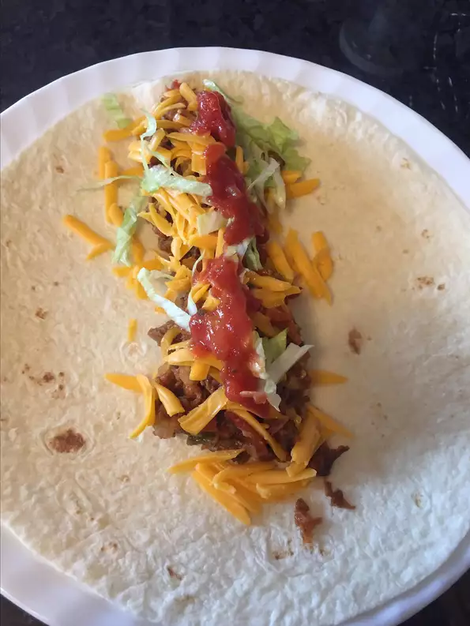

Roast Beef Burritos

Turn your leftover roast beef into an amazing Mexican meal!
The beef is mixed with onions, tomatoes, chilies, seasonings, and served up burrito style.
You will love this recipe.
Ingredients:
- 1 tablespoon vegetable oil
- 1 onion, chopped
- 1 clove garlic, minced
- 4 tomatoes, chopped
- 2 cups chopped cooked roast beef
- 1 (8 ounce) jar prepared taco sauce
- 1 (4 ounce) can diced green chile peppers
- ½ teaspoon cumin
- ⅛ teaspoon red pepper flakes, or to taste (Optional)
- 6 (7 inch) flour tortillas, warmed
- 1 ½ cups shredded Cheddar cheese
- 2 cups shredded lettuce
Steps:
- Heat the oil in a skillet over medium-high heat.
Stir in the onion and garlic, and cook until tender and transparent, about 5 minutes.
Mix in the tomatoes, roast beef, taco sauce, chile peppers, cumin, and red pepper flakes, if desired.
Bring the mixture to a boil. Reduce heat to medium, and simmer, uncovered, for 25 minutes, or until thickened.
- Arrange tortillas on a clean, flat work surface. Spread about 2/3 cup of beef mixture in the center of each warm tortilla.
Sprinkle evenly with cheese and lettuce. Fold over ends and sides to make a package.
BACK